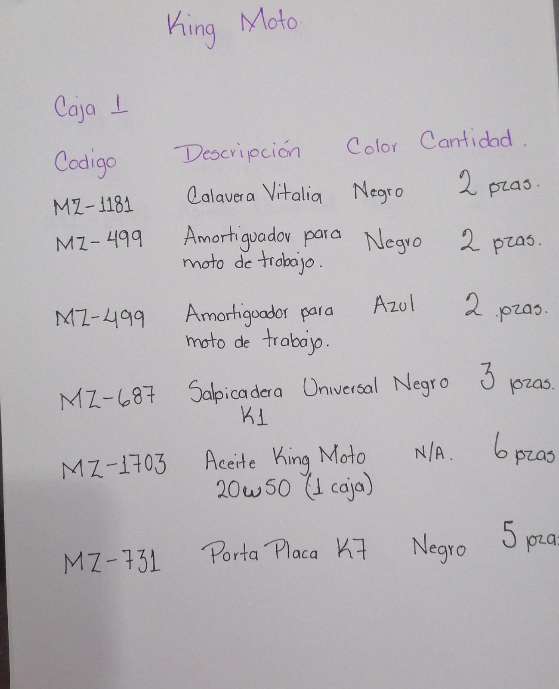
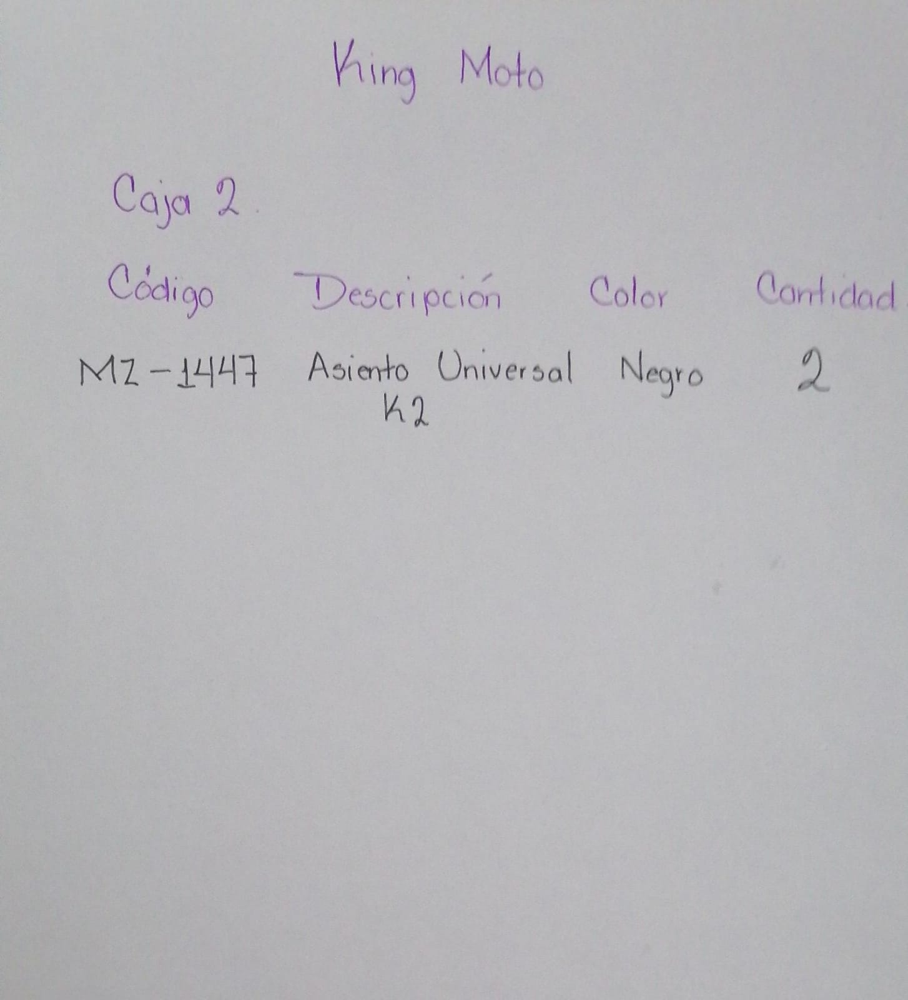

Actualizado30-oct. 17 unidades anteriores conservadas;5 bases de faro MZ-629 añadidas al293 / CDEI89788. Sin nueva entrada de mercancía.
| Código | Recibido | Asignado | Envíos | Bodega |
|---|---|---|---|---|
| MZ-1181 | 2 | 2 | 293 | 0 |
| MZ-499-NG | 2 | 2 | 293 | 0 |
| MZ-499-AZ | 2 | 2 | 293 | 0 |
| MZ-687 | 3 | 3 | 293 | 0 |
| MZ-1703 | 6 | 6 | 293 | 0 |
| MZ-629 | 5 | 5 | 293 | 0 |
| MZ-1447 | 2 | 2 | 292 | 0 |
Mensaje enviado a KINGMOTO30-oct13:22: MZ-687,3 recibidas frente a4 cotizadas;MZ-499,2 juegos negros y2 azules frente a4 negros. Son las dos diferencias solicitadas por Ángel. Pendiente documento corregido y CFDI. No es autorización de pago.
Cotización30119 · Cotización30120 original, pendiente ajuste
La corrección de Jessica identificó MZ-629 como base de faro; la lectura inicial MZ-731 ya fue sustituida. Envío292:505;envío293:49.

